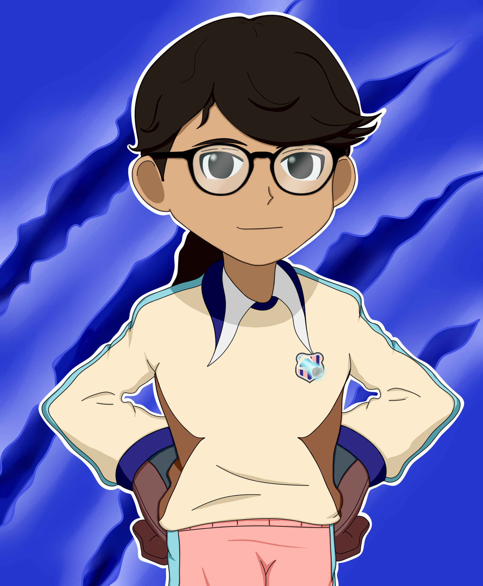
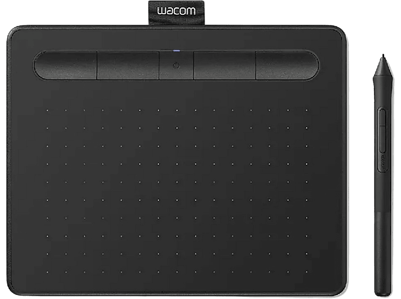
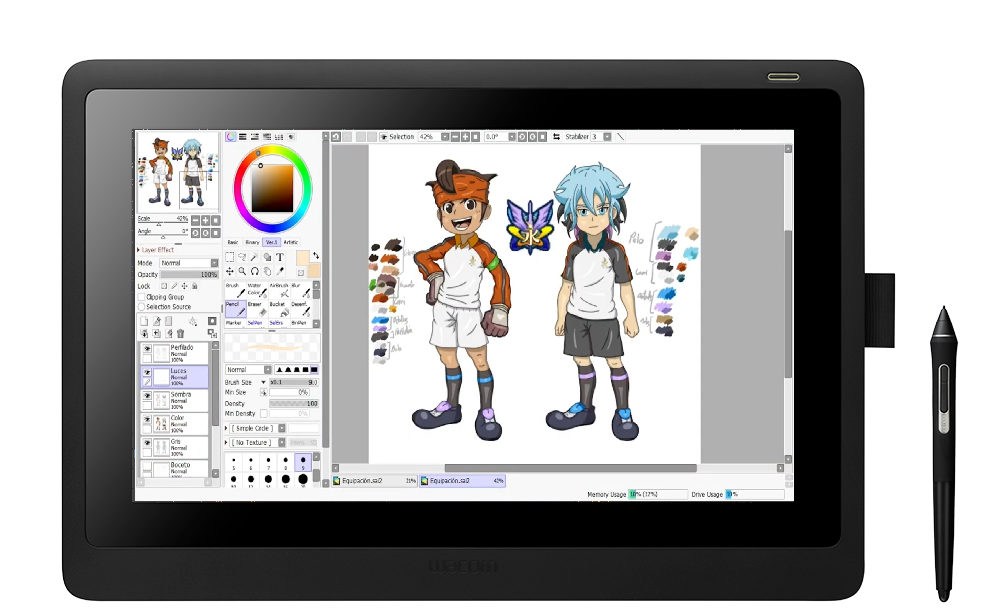

Introducción

Buenas, soy Iria, y en los distintos apartados de esta página podrás ver los trabajos que he realizado anteriormente, bien por encargo o por hobbie. Además, encontrarás la información necesaria para hacerme un encargo y distintas formas de contactarme en caso de tener dudas.
Debajo de esta información se encuentra una pequeña explicación de los tipos de dibujo, digital y tradicional, para los más curiosos.
Dibujo Digital
El dibujo digital es aquel en el que el producto es realizado empleando herramientas tecnológicas, bien sea en un móvil con el dedo, una tablet y un lápiz táctil, o la opción más común, en un ordenador empleando una tableta digital como las mostradas en las imagenes.


Dibujo Tradicional
Por otra parte, el dibujo tradicional es aquel realizado con materiales físicos, como puede ser el mítico lápiz y papel.
Pese a poder hacer obras increíbles con tan solo un lápiz o un boli, los artistas suelen complementarlo con otros materiales, siendo los más comunes lápices de colores (opciones económicas como Faber-Castell o Alpino y no tan económicas como los Caran d'Ache o Prismacolor) y los rotuladores a base de alcohol (una opción más económica son los rotuladores Ohuhu, por otro lado se encuentran los Copic y los Windsor & Newton).